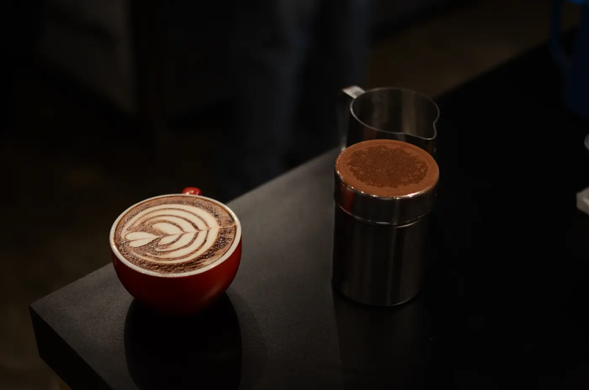
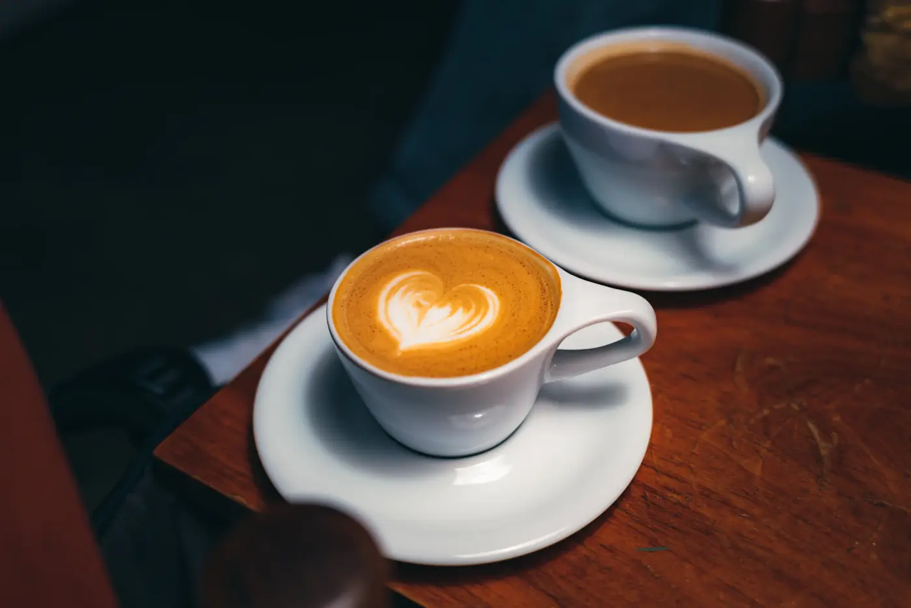
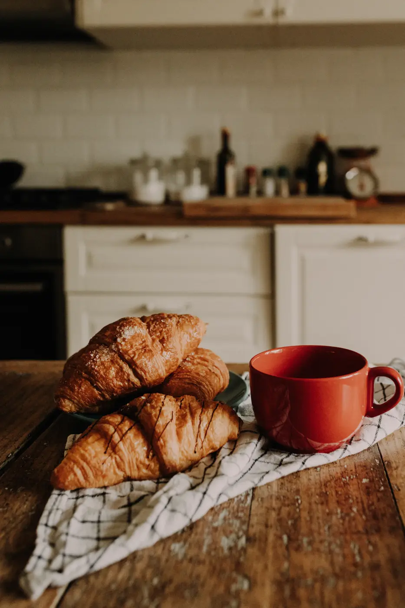
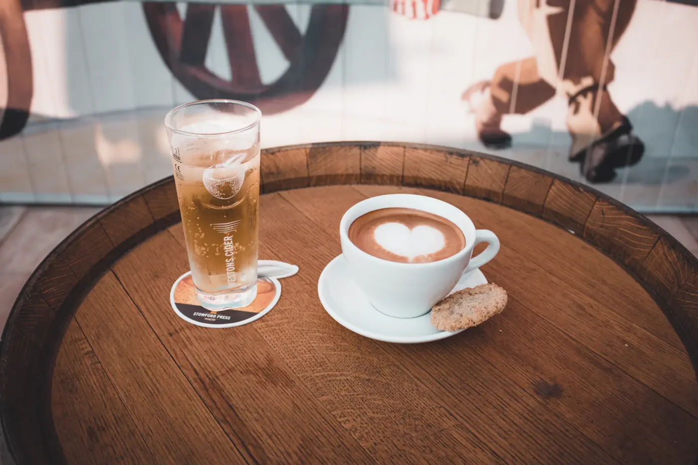
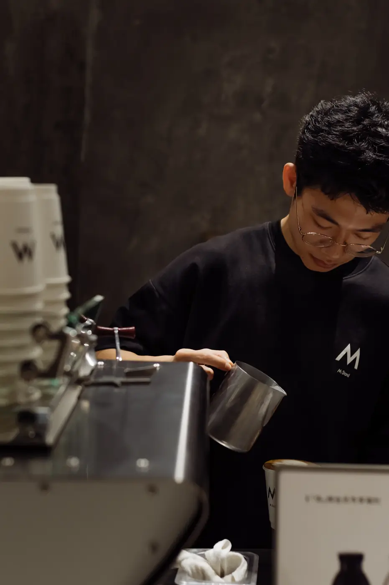
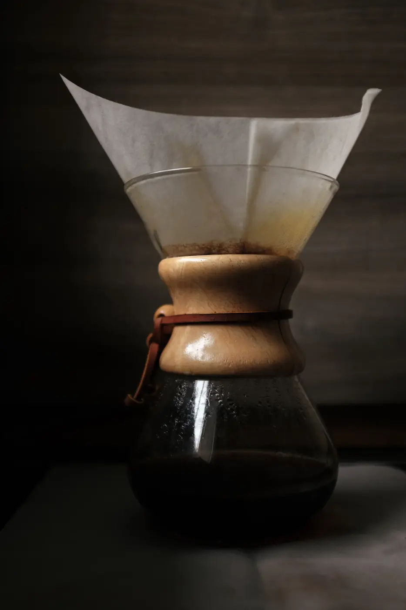
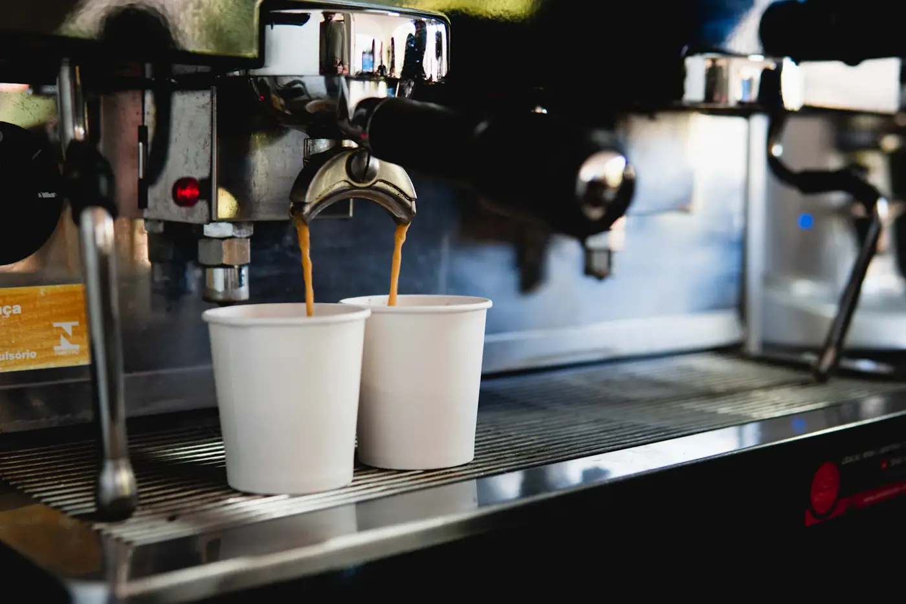
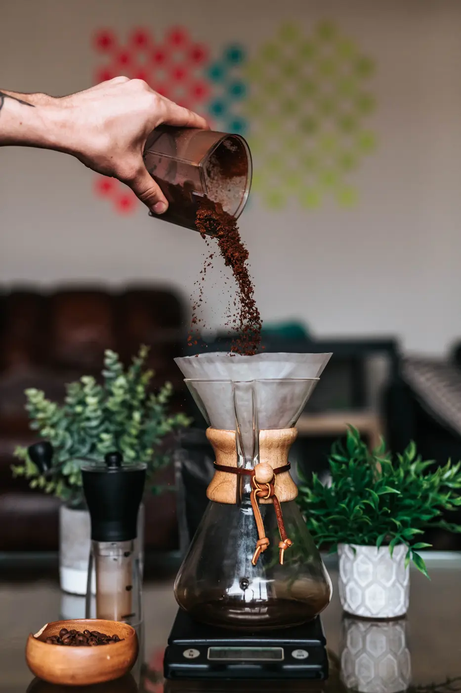
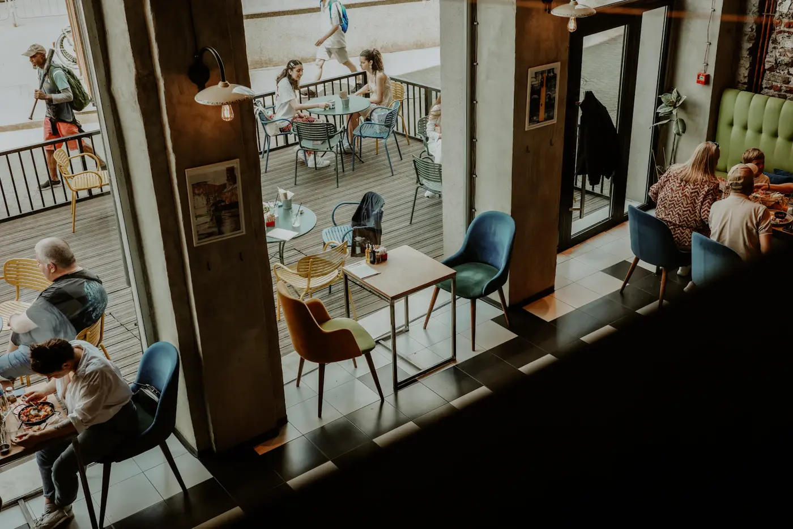
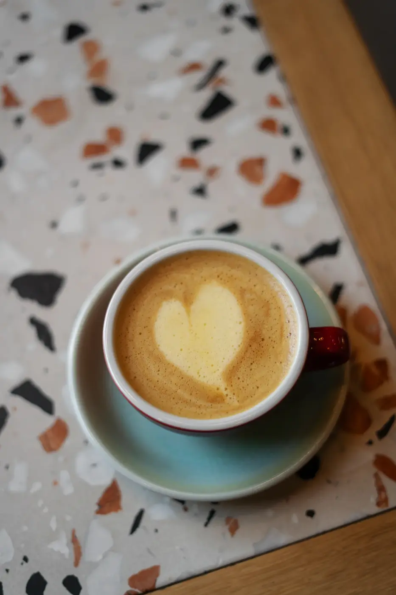

Disfruta tu café de la mañana
Café de especialidad, tostado en casa y servido sin prisa. Pasa por una taza, un desayuno o pan recién hecho.
Nuestra Carta

Café de especialidad, tostado en casa y servido sin prisa. Pasa por una taza, un desayuno o pan recién hecho.
Nuestra Carta
Desayunos, comidas y pastelería artesanal
Panadería de masa madre, sándwiches y dulces del día. Todo se hornea en casa y sale por la mañana.
Ver desayunos
Espresso, filtrados y bebidas frías
Del espresso de la casa a un V60 con el grano de la semana. Pregunta por el origen del día.
Ver la carta.
Atención en barra y en mesa
Una barra abierta donde ver cómo se prepara tu café, conversar con quien lo hace y quedarte el tiempo que quieras.
Ver la carta.



